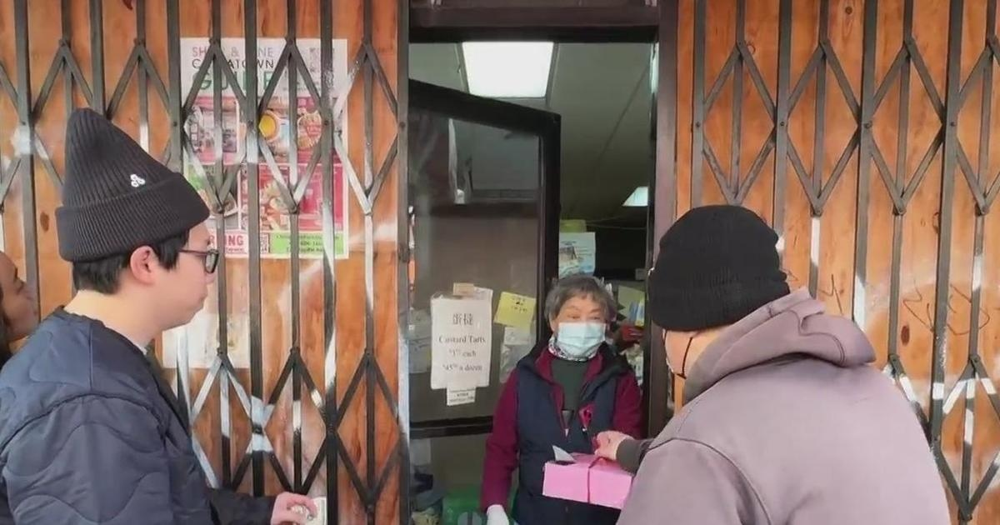

San Francisco Chinatown bakery's reputation built on famed egg custard tartThe Golden Gate Bakery in San Francisco Chinatown is considered the best place to grab an egg custard tart, known as a dan-tat to locals. The problem is most people do not seem to know if and when the business is open. The mystery begins with the fact if you walk by the businesses on Grant Avenue it looks like an abandoned building with bars, plywood and graffiti covering the storefront. Sometimes the only way to tell if it is open is if there is a line of people outside. Once in line, customers are likely to be greeted by Virginia Woo who pops her head in and out of the single door taking orders and delivering the fresh egg custard tarts to customers who wait as long as an hour. Tim Delgado Maclino, a food influencer who gives food tours in San Francisco for the Chinatown Merchants Association, had never tried the famed Golden Gate Bakery custards and wanted to figure out the allure. On a random Tuesday, he found himself first-in-line, with a note on the door saying, they opened at 1:00 p.m. "It is interesting they can operate like this. It is all boarded up, you have the gate, the graffiti, and the door is like a little kiosk," said Macalino. "It is a mystery box that you have to open up to see what's inside." During the pandemic, when many businesses were forced to shutter, people thought the Golden Gate Bakery had fallen the same fate. And for the mom-and-pop shops that did survive, including in Chinatown, they had to face a rash of break-ins and vandalism. But after a long closure, the Golden Gate Bakery quietly re-opened for business last fall to sell mooncakes, switching to their famous egg custards this year. Between serving customers, Virginia explained why they now operate behind what looks like a barricade. "It is too hard to move the wood (plywood boards) every day," said Woo. "They break out windows, and it cost more to fix them." She now insists, Chinatown is safe for visitors but maintains it is easier to operate the business through the door like a kiosk, rather than open the entire storefront. As for their inconsistent hours, long-time Facebook page IstheGoldenGateBakeryOpenToday tries to keep tabs on store hours. Virginia explained whether they close or open for long stretches all depend on the bakers who make the treats. "We are trying to open for as long as we can, but it all depends on the bakers," she said. "If the bakers want to open, we are happy to come and help. But if they are not coming, we can't do anything about it." Some longtime customers standing in line said it is part of the frustration and charm of the bakery. "Sometimes they are just on vacation and disappear because they want to, then they just open up," they said. "It adds to the mystery of the place; it makes it more desirable." But whether it is worth the wait, Tim Macalino gave us this review. "I think they are beautiful. That crust is so good, and the custard is eggy, fluffy and dreamy and not too sweet," he said. "Definitely Top 3 in San Francisco, and worth the wait." It's a tasty San Francisco Chinatown treat — but only if you can figure out if they are indeed open for businesses. for more features. |
 |